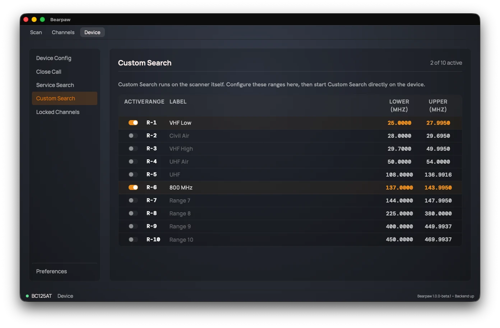

Custom Search
Custom Search sweeps frequency ranges you define yourself. The scanner supports 10 custom ranges, and the header shows how many are active ("N of 10 active").

Set the ranges here, then start the search on the radio.
Each of the ten rows has:
- An Active switch to include that range in the sweep.
- A Range label (R-1 through R-10) identifying the slot.
- A Label for your own reference (e.g. "Local Ham"). The label stays in the app; it is not written to the scanner.
- Lower (MHz) and Upper (MHz), the start and end of the range. These are written to the scanner.
To set one up: flip a row's Active switch on, type a Lower and Upper frequency, name it if you like, then start Custom Search on the radio.